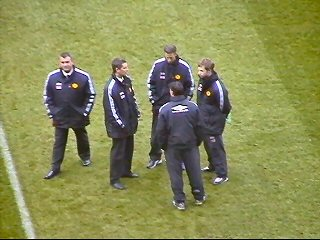
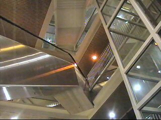

|
FC Utrecht - Roda JC (3-1) 30 november 2003 |
Ziekenhuis De Galgenwaard.
FC Utrecht miste vandaag 4 basisspelers wat
voor de KNVB geen reden was de wedstrijd op
te schorten.
De Bunnikside.
Deze tribune met uiterst links het gastenvak
wordt momenteel gerenoveerd en wordt straks
even hoog als de Bunnikside.
Z17 en Z16 aan de koffie (!)

Vloet, Trost en enkele spelers.
De onvermijdelijke mascotte in sinterklaas-outfit.
De Rodasupporters zonder dak boven het hoofd
maar wel met een leger palen voor de neus.
Spelers betreden het veld op "Eye of the tiger".
Vrije trap Bosschaart richting 16 meter.
Alwaar Vandenbroeck de bal in eigen doel kopt.
Kujovic is verslagen: 1-0 (28').
In de 61e min.scoort De Groot 2-0 (geen foto).
Overleg bij een Utrechtse vrijetrap.
Overleg bij een Kerkraadse vrijetrap.
Vicelich schiet op Ponk.
Uit de rebound scoort Cristiano: 1-2 (69).
Geen griep, toch geveld.
Geen griep, toch geveld.
Addo ligt ongelooflijk te suffen waardoor Leitoe
een prachtige goal weet te scoren: 3-1 (77').

Jammer voor Kujovic die wederom voortreffelijk
keepte.
De Bunnikside produceerde slechts een bom en
slechts eenmaal een kwetsende opmerking naar
Ponk maar werd door de stadionspeaker daar
meteen op afgerekend.
Een volkomen onverwachte maar zeer verdiende
nederlaag van Roda. De spelers sjokken naar de
meegereisde supporters.
Een van de vele lounges.
Een van de vele barretjes.
Omdat ik geen foto van zijn goal heb daarom
alsnog in beeld: Donny de Groot.
De persoon links op de foto zoekt een baantje
als geschiedenisleraar, bij voorkeur in Limburg.
Keurig sanitair.
Zoals twee weken geleden in SnowWorld
afgesproken kwam Van Loen opdagen voor een
wedstrijdevaluatie.

Het hoofdgebouw van De Galgenwaard lijkt wel
een warenhuis.
We danken ING CAR LEASE voor de
gastvrijheid.
© Koempels
Pleasure Dome